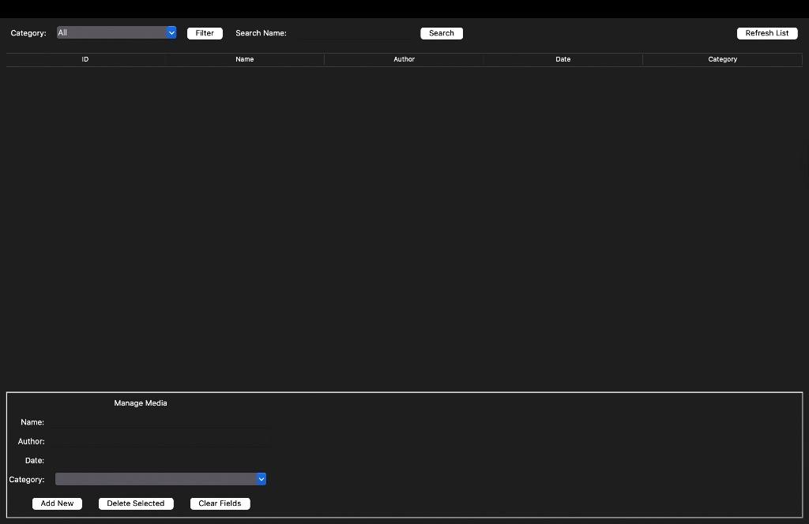
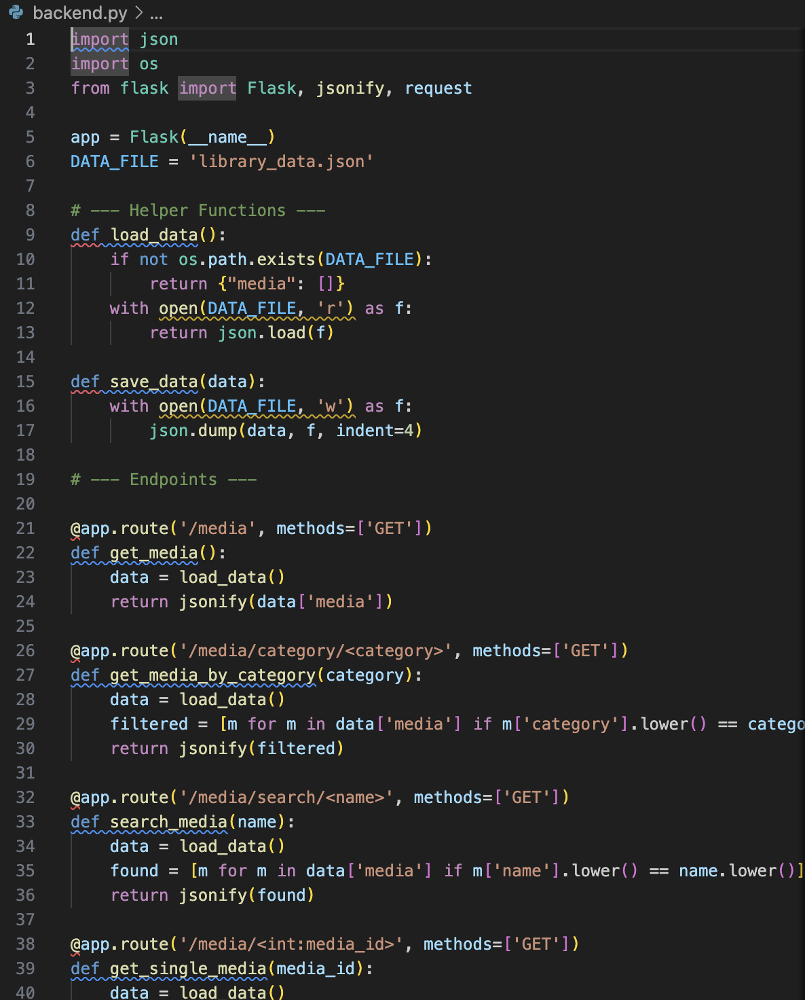

Project Overview
This project is a comprehensive desktop application designed to manage library inventories.
Built using Python, it implements a robust Client-Server architecture.
The system features a Flask (REST API) backend that handles data persistence via JSON,
and a user-friendly Tkinter frontend for managing books, films, and magazines.
System Visuals

Figure 1: The Graphical User Interface (GUI) allowing users to filter and search media.

Figure 2: The JSON Data Structure and Backend API Endpoints.
📂
1. Unzip
Extract the folder
➜
💻
2. Terminal
Open in folder
➜
⚙️
3. Backend
python backend.py
➜
🖥️
4. Frontend
python frontend.py
```
### Step 2: Update `style.css`
Add this CSS to the bottom of your `style.css` file. This turns those `div` blocks into a nice horizontal diagram with arrows.
```css
/* Flowchart Styles */
.flowchart-container {
display: flex;
justify-content: center;
align-items: center;
flex-wrap: wrap;
gap: 15px;
margin: 30px 0;
padding: 20px;
background: white;
border-radius: 8px;
border: 1px solid #ddd;
}
.step-box {
text-align: center;
padding: 15px;
background: #f8f9fa;
border-radius: 8px;
width: 120px;
box-shadow: 0 2px 4px rgba(0,0,0,0.05);
transition: transform 0.2s;
}
.step-box:hover {
transform: translateY(-5px);
background: #eef2f5;
}
.icon {
font-size: 2em;
margin-bottom: 10px;
}
.step-title {
font-weight: bold;
color: #2c3e50;
margin-bottom: 5px;
}
.step-desc {
font-size: 0.8em;
color: #666;
font-family: monospace;
background: #eee;
padding: 2px 5px;
border-radius: 4px;
}
.arrow {
font-size: 1.5em;
color: #bdc3c7;
font-weight: bold;
}
@media (max-width: 600px) {
.flowchart-container {
flex-direction: column;
}
.arrow {
transform: rotate(90deg);
}
}
Try It Yourself
The project is open-source and available for download. You can run the Library System on your local machine.
Download Source Code (.zip)
Download Source Code (.zip)
System Requirements:
- Python 3.10+
- Libraries: Flask, Requests